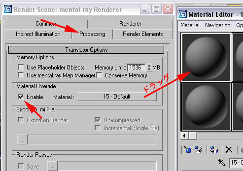
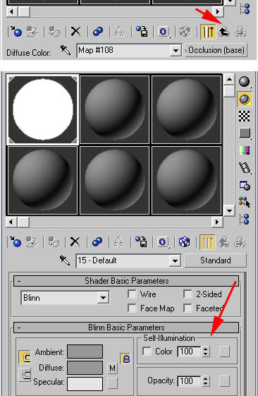
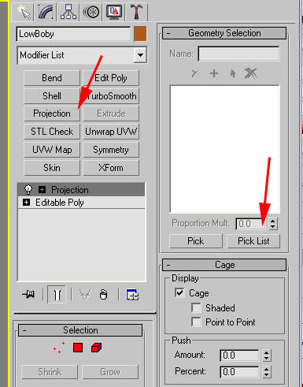
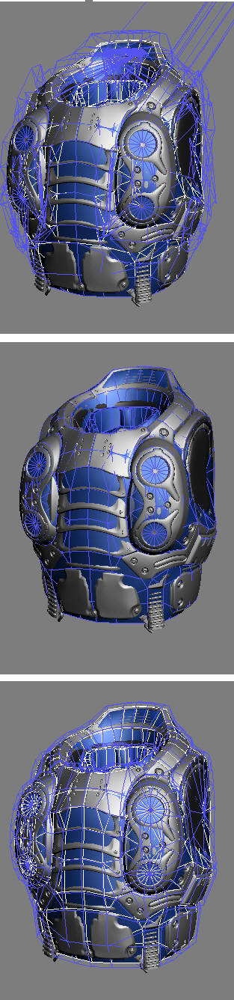
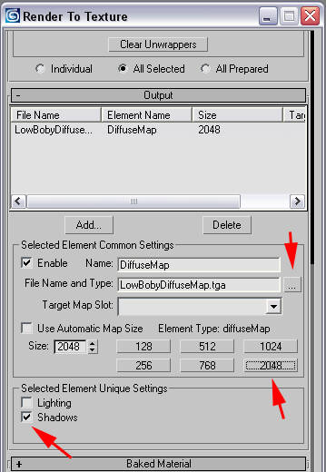

UDN
Search public documentation:
CreatingShadeMapsJP
English Translation
中国翻译
한국어
Interested in the Unreal Engine?
Visit the Unreal Technology site.
Looking for jobs and company info?
Check out the Epic games site.
Questions about support via UDN?
Contact the UDN Staff
中国翻译
한국어
Interested in the Unreal Engine?
Visit the Unreal Technology site.
Looking for jobs and company info?
Check out the Epic games site.
Questions about support via UDN?
Contact the UDN Staff
シェードマップの作成テクニック
ドキュメントの概要: 3D Studio MAX を使ったシェードマップのクイック作成ガイド。 ドキュメントの変更ログ: Shane Caudle により原著概要
良質のシェードマップを作成するためのコツやヒントを以下にご紹介します。以下のプロセスでは、Autodesk のhttp://www.autodesk.com/mentalray][MentalRay] でアンビエント オクルージョン (AO) シェーダーをアンリットのディフューズテクスチャとして使い、それを Max の Render to Texture ツールで取得しています。これはうまく動作し、短時間で作成できます。ステップ 1
まず、MentalRay をレンダラーとして割り当てます｡ レンダラーの設定へ行き、[Common] （全般） タブを開け、[Assign Renderer] （レンダラーの割り当て） タブを開けます｡[...]ボタンをクリックし、[Mental Ray] 選びます｡
ステップ 2
[Processing] （処理） のタブをクリックし、[Material Overide] （マテリアル オーバーライド） を有効にします｡マテリアルをクリックしてマテリアル エディタへドラッグし、インスタンス化します。
ステップ 3
[Diffuse] タブをクリックして、[Ambient/Reflective Occlusion] （アンビエント/リフレクティブ オクルージョン） を選びます｡
ステップ 4
ここで Ambient Occlusion シェーダー設定がポップアップ表示されます。 シェードマップをどのぐらい滑らかにするかに応じて、サンプル数を 16 から 25 ～ 50 まで変更できます。値が高いほど時間がかかります。 次に、ローポリゴンモデルを計算から除外し、ハイポリゴンオブジェクトから突き出した箇所にシャドウが投影されないようにする必要があります (ローポリゴンのシャドウ投影をオフにする設定もありますが、うまく機能していません)。[Incl./Excl. Object ID] をローポリゴンの ID に設定します。負の値だと除外になるので、これを設定 -30 に設定します。
ステップ 5
上向きの矢印をクリックして、マテリアル ツリーの一番上へ行きます｡ Self-Illumination （自光性） の値を 100 に設定します｡
ステップ 6
低ポリ モデルのオブジェクト ID を、アンビエント オクルージョン シェーダーで除外されるように設定した値にします｡この場合は 30 です。 低ポリ モデルを右クリックして、プロパティを開きます｡ 'G-Buffer' で、オブジェクト チャンネルを 30 にします。
ステップ 7
次に、シーンをテクスチャのレンダリングプロセスに設定します｡ 低ポリ モデルを選択して、Projection Modifier (投影モディファイヤ) を適用します｡[Geometry Selection] （ジオメトリの選択） の下で、[Pick List] （ピック リスト） を押し、高ポリのモデルを選択します｡
ステップ 8
Projection Modifier にモデルを簡単に追加できるように、HighPoly モデルの選択セットを作成することも可能です。それには [Selection Set] で HighPoly セット (この場合は Chest_High) を選択します。
ステップ 9
高ポリ モデルを追加すると、ケージの中は混乱状態に陥ります｡ 'Cage' （ケージ） 設定の下で [rest] （休止） ボタンを押すと、この状態から回復できます｡ 次に、Push 値を使用して必要なトレース距離を確認します。ケージを使う必要はなく、むしろレンダリング テクスチャ オプション内で手動でトレース距離を設定した方が、SHTools または 3D Studio Max の新しいバージョンに最も近い結果が得られます。
ステップ 10
0 (ゼロ) キーを押して、テクスチャのレンダリングツールを表示します｡ 'Projection Mapping' （投影マッピング） の下の [Enable] （有効化） をクリックします｡ 'Padding' （パディング） を 4 程度に設定します｡ 'Use Existion Mapping' （現在のマッピングを使う） がチェックされていることを確認します｡ 'Output' （出力） の下の [Add] （追加） をクリックし、続いて [Choose DiffuseMap] （Diffuse マップを選択） をクリックします｡
ステップ 11
SHTools または 3D Studio Max の新しいバージョンのように機能させたい場合は、[Options] ボタンを押して [Use Cage] の選択を解除します。そうでない場合は投影ケージのプッシュ距離を手動で設定します。オフセットは任意のトレース距離です。
ステップ 12
必要に応じて、出力パス（経路）とファイル名を変更します｡ 'Resolution' (解像度) を設定します｡ 'Shadows' (シャドウ) を必ずチェックします｡そうしないと、イメージは真っ白になります｡
ステップ 13
最後に [Render] ボタンを押します｡
ステップ 14
テクスチャリングに最適な、ファイナルのシェード マップです。 お楽しみください！